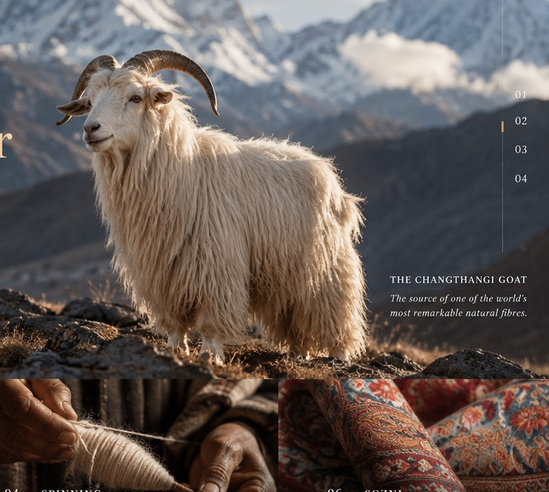

اطلب وثائق المؤشر الجغرافي ذات الصلة.
قد تساعد هذه الوثائق في التحقق من المنشأ الجغرافي ومواصفات المنتج ومعلومات المستخدمين المعتمدين، بحسب الحالة.
تعرّف إلى التراث ←تراث نسيجي حيّ
من جبال الهيمالايا إلى أيدي حرفيي كشمير.
اكتشف الألياف والناس والمهارات والتقاليد التي تقف وراء الباشمينا، درسًا بعد درس.
ابدأ رحلة التعلّم ←
تبدأ الأصالة بالدليل
كلمة «باشمينا» وحدها لا تكفي. اسأل عن المعلومات والوثائق التي تدعم وصف النسيج. فالحرفية مهمة، وكذلك التوثيق.
قد تساعد هذه الوثائق في التحقق من المنشأ الجغرافي ومواصفات المنتج ومعلومات المستخدمين المعتمدين، بحسب الحالة.
تعرّف إلى التراث ←يقدّم تقرير المختبر معلومات عن العيّنة التي جرى فحصها. تحقّق من صلة العيّنة بالمنتج ومن نطاق نتيجة الفحص.
يميّز الوصف المسؤول بين نوع الألياف وطريقة التصنيع والعمل الحرفي والوثائق المتاحة.
تذكّر: المؤشر الجغرافي والفحص المخبري لا يجيبان عن السؤال نفسه. وتساعد إمكانية التتبّع على جمع المعلومات، لكنها لا تعوّض غياب الدليل.
رحلة الباشمينا
تأخذك اثنا عشر درسًا في رحلة عبر المادة والتقنيات والأشخاص الذين يمنحون هذا النسيج حياته.
الألياف وأصلها وبداية رحلتها.
اقرأ الدرس التفصيلي بالعربية ←منشأ الباشمينا: ماعز تشانغثانغي وبيئتها.
اقرأ الدرس التفصيلي بالعربية ←تهيئة الألياف الخام بإزالة الشعر الخشن والغبار والشوائب.
اقرأ الدرس التفصيلي بالعربية ←تحويل الألياف المهيّأة إلى خيوط يدويًا أو آليًا.
اقرأ الدرس التفصيلي بالعربية ←فهم خيوط السدى واللحمة وكيف تتحول الخيوط إلى قماش.
اقرأ الدرس التفصيلي بالعربية ←فن التطريز الكشميري الدقيق باليد.
اقرأ الدرس التفصيلي بالعربية ←فن النسيج الكشميري ذي الزخارف والأنماط.
اقرأ الدرس التفصيلي بالعربية ←تهيئة النسيج المنسوج أو المطرّز ليصبح قطعة مكتملة.
اقرأ الدرس التفصيلي بالعربية ←تجاوز الملصقات والاختبارات غير الرسمية والافتراضات.
اقرأ الدرس التفصيلي بالعربية ←فهم المصطلحين المتقاربين وسياق كل منهما.
اقرأ الدرس التفصيلي بالعربية ←الأيدي البشرية والمعرفة والوقت وراء الحرفة.
اقرأ الدرس التفصيلي بالعربية ←صون تراث حيّ مع إتاحة المجال له كي يتطور.
اقرأ الدرس التفصيلي بالعربية ←تتضمن النسخة العربية الآن الدروس التفصيلية الاثني عشر، مع الحفاظ على الصور ومقاطع الفيديو الأصلية. اختر أي درس للبدء.
مركز سيفارا للمعرفة
تركيب الألياف وطريقة الإنتاج والوثائق المتاحة مسائل مختلفة، وينبغي التحقق من كل منها على حدة.
يوضّح الملف الجيد ما هو معروف وموثّق، وما لم يُثبت بعد.
تسهم المادة والعمل والوقت والتقنيات في تحديد قيمة النسيج.
المؤشر الجغرافي · GI
تحمل تقاليد النسيج في كشمير معرفةً توارثتها الأجيال. وللمؤشر الجغرافي إطار قانوني محدد؛ لذا ينبغي التحقق من الوثائق المنطبقة على كل منتج بدل الاكتفاء بذكر الاسم.
التطريز السوزني ونسيج الكاني والباشمينا تقاليد مترابطة لكنها متميزة. وينبغي أن توضّح أوصاف المنتجات التقنية المستخدمة والأدلة المتاحة.